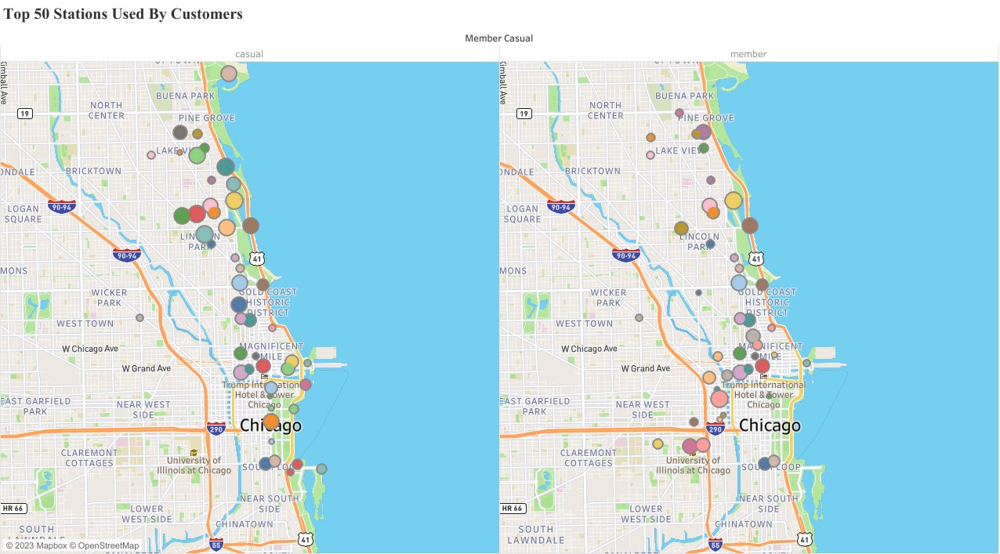

Cyclistic Case Study
In this case study, I analyze historical data from a Chicago based bike-share company in order to identify trends in how their customers use bikes differently. The main tools I use are spreadsheets, SQL and Tableau. Here are the highlights:

Scenario
Cyclistic is a bike-share company based in Chicago with two types of customers. Customers who purchase single-ride or full-day passes are known as casual riders, while those who purchase annual memberships are known as members. Cyclistic's financial analysts have concluded that annual members are much more profitable than casual riders. The director of marketing believes the company's future success depends on maximizing the number of annual memberships. The marketing analytics team wants to understand how casual riders and annual members use Cyclistic bikes differently. From these insights, the team will design a new marketing strategy to convert casual riders into annual members. The primary stakeholders for this project include Cyclistic's director of marketing and the Cyclistic executive team. The Cyclistic marketing analytics team are secondary stakeholders.
Defining the problem
The main problem for the director of marketing and marketing analytics team is this: Design marketing strategies aimed at converting Cyclistic's casual riders into annual members. There are three questions that will guide this future marketing program. For my scope on this project, I will analyze the first question:
1) How do annual members and casual riders use Cyclistic bikes differently?2) Why would casual riders buy Cyclistic annual memberships?
3) How can Cyclistic use digital media to influence casual riders to become members?
By looking at the data, we will be able to first get a broad sense of certain patterns that are occurring in the two different groups. Understanding the differences will provide more accurate customer profiles for each group. These insights will help the marketing analytics team design high quality targeted marketing for converting casual riders into members. For the Cyclistic executive team, these insights will help Cyclistic maximize the number of annual members and will fuel future growth for the company.
Business task
Analyze historical bike trip data to identify trends in how annual members and casual riders use Cyclistic bikes differently.
Data sources
We'll be using Cyclistic's historical bike trip data from the last 12 months, which is publicly available here. The data is made available by Motivate International Inc. under this license. The data is stored in spreadsheets. There are 12 files total:
1. divvy_tripdata_202206 2. divvy_tripdata_202207 3. divvy_tripdata_202208 4. divvy_tripdata_202209 5. divvy_tripdata_202210 6. divvy_tripdata_202211 7. divvy_tripdata_202212 8. divvy_tripdata_202301 9. divvy_tripdata_202302 10. divvy_tripdata_202303 11. divvy_tripdata_202304 12. divvy_tripdata_202305
It is structured data, organized in rows (records) and columns (fields). Each record represents one trip, and each trip has a unique field that identifies it: ride_id . Each trip is anonymized and includes the following fields:
* ride_id #Ride id - unique * rideable_type #Bike type - Classic, Docked, Electric * started_at #Trip start day and time * ended_at #Trip end day and time * start_station_name #Trip start station * start_station_id #Trip start station id * end_station_name #Trip end station * end_station_id #Trip end station id * start_lat #Trip start latitude * start_lng #Trip start longitute * end_lat #Trip end latitude * end_lat #Trip end longitute * member_casual #Rider type - Member or Casual
Bike station data that is made publicly available by the city of Chicago will also be used. It can be downloaded here. In terms of bias and credibility, both data sources we are using ROCCC:
• Reliable and original: this is public data that contains accurate, complete and unbiased info on Cyclistic’s historical bike trips. It can be used to explore how different customer types are using Cyclistic bikes.
• Comprehensive and current: these sources contain all the data needed to understand the different ways members and casual riders use Cyclistic bikes. The data is from the past 12 months. It is current and relevant to the task at hand. This is important because the usefulness of data decreases as time passes.
• Cited: these sources are publicly available data provided by Cyclistic and the City of Chicago. Governmental agency data and vetted public data are typically good sources of data.
Data cleaning and manipulation
Analysis #1: Exploratory
Microsoft Excel: initial data cleaning and manipulation
Our next step is making sure the data is stored appropriately and prepared for analysis. After downloading all 12 zip files and unzipping them, I housed the files in a temporary folder on my desktop. I also renamed all the files to the appropriate naming format for easy reading and navigation between them as "divvy_tripdata_202206".
I started to explore each file (month) and took a closer look into the data to familiarize myself with the data, then I started to explore the data and check each column for any mistakes either typos or in the data type.
I 've created a new column calculating ride length and used it to filter the data and check it's integrity.
I found some rides which I have excluded it from the data before I have begun to analyze it such as:
1. some rides which had the end time of the ride before the start time of the ride.
2. other rides which had the same start and end time.
3. I also found trips with more than 24hr trip length so I excluded them to not affect with our analysis as they are unusual and represent about 0.2% of the total trips.
I checked for any duplication and deleted them.
I've created a new column called "day_of_week" labeled from 1 to 7 as 1 = "Saturday" and 7 = "Friday".
I repeated these steps for all the files (month) of the previous year.
Further data cleaning and manipulation via SQL
As the files are very large to be handled in excel, I switched to SQL specifically Microsoft SQL server. firstly, I uploaded each file separately into its own table (while maintaining the original files as a backup).
After uploading all 12 files into a custom dataset that I've created and renaming the tables to their appropriate naming I begin my journey into the data.

# Create full_year_data table
I started to my analysis by grouping all the tables into one data for easy navigations and extracting data, also to make any change I want without affecting the original data.
create table full_year_data ( ride_id nvarchar(255), rideable_type nvarchar(255), started_at datetime, ended_at datetime, start_station_name nvarchar(255), start_station_id nvarchar(255), end_station_name nvarchar(255), end_station_id nvarchar(255), start_lat float, start_lng float, end_lat float, end_lng float, member_casual nvarchar(255), ride_length time, day_of_week varchar(255) ) insert into Cyclistic..full_year_data select * from Cyclistic..[divvy-tripdata-202206] union all select * from Cyclistic..[divvy-tripdata-202207] union all select * from Cyclistic..[divvy-tripdata-202208] union all select * from Cyclistic..[divvy-tripdata-202209] union all select * from Cyclistic..[divvy-tripdata-202210] union all select * from Cyclistic..[divvy-tripdata-202211] union all select * from Cyclistic..[divvy-tripdata-202212] union all select * from Cyclistic..[divvy-tripdata-202301] union all select * from Cyclistic..[divvy-tripdata-202302] union all select * from Cyclistic..[divvy-tripdata-202303] union all select * from Cyclistic..[divvy-tripdata-202304] union all select * from Cyclistic..[divvy-tripdata-202305]
Then I added a new column called "month" by extracting the month value from "started_at" column.
alter table Cyclistic..full_year_data add month float update Cyclistic..full_year_data set month = MONTH(started_at)
I then used the "month" column to categorize the full year into seasons which will be handy during the analysis to find different trends and pattern.
alter table Cyclistic..full_year_data add season varchar(255) update Cyclistic..full_year_data set season = case when month = 6 then 'summer' when month = 7 then 'summer' when month = 8 then 'summer' when month = 9 then 'autumn' when month = 10 then 'autumn' when month = 11 then 'autumn' when month = 12 then 'winter' when month = 1 then 'winter' when month = 2 then 'winter' when month = 3 then 'spring' when month = 4 then 'spring' when month = 5 then 'spring' else null end
Originally when I added "day_of_week" column the days were represented by number (1 = 'Saturday' and 7 = 'Friday'), but I've updated it to show names instead of numbers.
UPDATE
Cyclistic..full_year_data
SET
day_of_week =
CASE
WHEN day_of_week = '1' THEN 'Sunday'
WHEN day_of_week = '2' THEN 'Monday'
WHEN day_of_week = '3' THEN 'Tuesday'
WHEN day_of_week = '4' THEN 'Wednesday'
WHEN day_of_week = '5' THEN 'Thursday'
WHEN day_of_week = '6' THEN 'Friday'
WHEN day_of_week = '7' THEN 'Saturday'
END
WHERE
day_of_week IN ('1', '2', '3', '4', '5', '6', '7')
I began my analysis with a simple Quary to compare between the seasons by:
• Total ride
select
season,
count(ride_id) as total_rides
from
Cyclistic..full_year_data
group by
season
order by
2 desc

• Average ride length
select
season,
cast(cast(avg(cast(CAST(ride_length as datetime) as float)) as datetime) as time(0))as avg_ride_length
from
Cyclistic..full_year_data
group by
season
order by
2 desc

From the last 2 queries we can clearly see that summer is the busiest season. Then I started to compere between "casual riders" & "member riders" by:
• Average ride length (Ride type)
select
member_casual,
cast(cast(avg(cast(CAST(ride_length as datetime) as float)) as datetime) as time(0))as avg_ride_length
from
Cyclistic..full_year_data
group by
member_casual
order by
2 desc
.jpg)
## casual riders have higher avg ride length than member riders by nearly double which is huge number so, we needed to check each individual month to explain this number
select
member_casual,
month,
season,
cast(cast(avg(cast(CAST(ride_length as datetime) as float)) as datetime) as time(0))as avg_ride_length
from
Cyclistic..full_year_data
where
member_casual ='casual'
group by
MONTH,member_casual,season
order by
4 desc
select
member_casual,
month,
season,
cast(cast(avg(cast(CAST(ride_length as datetime) as float)) as datetime) as time(0))as avg_ride_length
from
Cyclistic..full_year_data
where
member_casual ='member'
group by
MONTH,member_casual,season
order by
4 desc


## we can clearly see that average ride length during summer made by (casual riders) is double the average rides made by (member riders). from this data we can make our initial hypothesis that casual & member riders may have different usage of the bikes.
• Total rides per month
select member_casual, month, season, count(ride_id) as rides_per_month from Cyclistic..full_year_data where member_casual='casual' group by member_casual,month,season order by 4 desc select member_casual, month, season, count(ride_id) as rides_per_month from Cyclistic..full_year_data where member_casual='member' group by member_casual,month,season order by 4 desc


## we can notice that (casual rider's rides) concentrate mainly during summer with nearly double the total number of rides of any other season, while (member rider's rides) have a close number across the year except winter seasons (the lowest number) for obvious reasons of course. my conclusion is that (casual riders) maybe consist of tourists either local or foreign or people ride to enjoy the summer "summer vacations" which support my initial hypothesis.
• Bike's type
select member_casual, rideable_type, count(ride_id) as number_of_rides from Cyclistic..full_year_data where member_casual = 'casual' group by member_casual,rideable_type order by 3 desc select member_casual, rideable_type, count(ride_id) as number_of_rides from Cyclistic..full_year_data where member_casual = 'member' group by member_casual,rideable_type order by 3 desc

## we notice 2 things: firstly, all docked bike rides had been made by casual members (there is no one uses docked bike among member riders), secondly, casual riders have way more rides by electric bike than classic bikes (1.29 million trips vs 0.85 million trips last year alone). my conclusion is that casual riders ride for fun and practability not for exercise and don't mind the extra cost which again further support my hypothesis.
• Total ride per day
select member_casual, day_of_week, count(ride_id) as rides_per_day from Cyclistic..full_year_data where member_casual = 'casual' group by member_casual,day_of_week order by 3 desc select member_casual, day_of_week, count(ride_id) as rides_per_day from Cyclistic..full_year_data where member_casual = 'member' group by member_casual,day_of_week order by 3 desc


## we can see that casual riders prefer the weekends (Saturday, Sunday) while member riders ride throughout the week. my conclusion is that (casual riders) ride for fun (during the weekends) while (members riders) ride for work and everyday life.
• Total ride per station
select top (50) member_casual, start_station_id, start_lat, start_lng, count(start_station_id) as total_ride_per_station from Cyclistic..full_year_data where member_casual = 'casual' group by member_casual,start_station_id,start_lat,start_lng order by 5 desc select top (50) member_casual, start_station_id, start_lat, start_lng, count(start_station_id) as total_ride_per_station from Cyclistic..full_year_data where member_casual = 'member' group by member_casual,start_station_id,start_lat,start_lng order by 5 desc


## we can see that the top 10 station used by casual riders are located around parks and the coast of the city, while the top 10 station used by member riders are located in the city area and downtown, these information are strongly support my hypothesis about (casual riders) consists of tourists or people enjoying their free time "vacations".
Analysis #2: Summary
full year - trends, relationships and insights
That's why we grouped all the files into one to visualize the entire year and discover the hidden trends, relationships and insight..Cyclistic .
For a summary and overall visualization of my full year analysis, please visit the Tableau Public dashboard I created here: Cyclistic Dashboard .
I will also highlight some of the interesting trends and relationships I discovered below.
Seasonal trends
Summer vs Winter

The busiest time of year for overall bike trips is (June, July, August). This makes sense because these months are mainly summer time. Bike riding is better suited for warmer weather, which is also why we see a major drop-off in total rides during the winter months (December, January, February).
Annual members outnumbered casual riders in every season except Summer. Interestingly, the annual members nearly doubled the casual ridership in Winter and Spring while only slightly edging them out in Autumn.
Median ride length
We learned in the earlier quarterly analysis that the average ride length for casual riders was significantly impacted by outliers, so median is a more accurate measurement for our analysis:

We can see that casual riders consistently have longer rides than annual members.
Day of week
Which days of the week have the highest number of rides for casual riders vs annual members? Let's look at the mode for each quarter and for the full year:

Casual riders were extremely consistent, with Saturday revealing itself as their preferred day of week for each quarter and across the full year. Meanwhile, the annual members looked to favor the middle of the week for their bike use. The most popular day for them across the full year was Wednesday.
Bike type
Do members and casual riders have different preferences for bike type? Are classic bikes more popular than electric bikes?

We can clearly see that Electric bikes are the most type of bikes that people rent whether they were casual or member riders, followed by classic bikes.
Start and end station use
In the Tableau Dashboard I created, there is a worksheet that allows the exploration of start and end station use by members, casual riders and combined overall rides. The snapshot below is from the overall view. While interacting with the dashboard, we can see that casual riders have a higher max than annual members. Annual members have a lower max, but we can see more colors represented across the member map versus the consistent coloring across the casual map. This tells us that rides by members are more distributed across stations while rides by casual riders are more top heavy in that a huge chunk are happening at the same few stations.
{kind=link}
Conclusion
Stakeholder presentation and dashboard
I've provided links below for my dashboard and shareholder presentation, which includes the following:
• A summary of my analysis
• Supporting visualizations and key findings
• Three recommendations based on my analysis